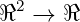
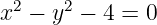

En esta clase se vio lo que fue un repaso en general de lo que son curvas de nivel y
topologí´a por lo que veremos algunos ejercicios de estos temas.
Curvas de nivel
La curva de nivel r de f(x,y) es Cr = {(x,y) ∈ℜ2∕f(x,y) = r}
primero vemos la funciØA³n

a
continuació´on se observa la superficie de la funció´on al ser cortada por el plano
z=5.
al observar la figura desde arriba se pueden observar 2 hipé´erbolas sin embargo, esa
no es la curva de nivel 5 que es la que estamos buscando, para obtener la curva de
nivel se tiene que realizar la proyecció´on, en este caso se obtiene la ecuació´on de
dicha curva de manera algebraica
curva de nivel 5

entonces tenemos la curva de nivel 5, esta curva de nivel se encuentra en
ℜ2
Hay que recalcar que superficie y curvas de nivel no son lo mismo, ya que la
superficie es un objeto que localmente es parecido a un plano y una curva es
un objeto geomé´etrico que localmente se parece a una recta, se dice ”se
parece 2 a que se habla se una equivalencia topoló´ogica local, ademas en las
superficies se hablan de objetos dimensionales mientras que en las curvas son
unidimensionales.
Por ultimo veamos la superficie de la funció´on
donde es cortada por un plano z=3
podemos ver que si vemos la figura desde arriba se genera un circulo, para ver
la curva de nivel 3 basta con realizar la proyecció´on, de igual manera al
ejercicio anterior se escribe algebraicamente la ecuació´on de la curva de nivel
3
ahora se va a ver de que tamañ˜no es el radio
por
lo tanto el radio del circulo es de 3.
Topologia
Sabemos que x ∈ X es punto de acumulació´on de A si ∀r > 0 Br(x) ∩ A≠∅
se define el disco cerrado como
D = {x,y|x2 + y2 ≤ 3}
Entonces el (3,0) es punto de acumulació´on de D, ya que cualquier vecindad de
cualquier tamañ˜no que se tome al rededor de ese punto va a tener puntos de D que
no sea el punto (3,0) es decir que no lo tiene
En el caso de punto de adherencia es similar, solo que este si tiene el punto (en
este caso seria el (3,0).
Pero no hay que confundir, ya que cuando un conjunto tiene puntos aislados, estos
puntos no son de adherencia, veamos un ejemplo donde punto de adherencia no
coincide co punto de acumulació´on
Sea
C = {x}∪ D
¿x es punto de adherencia de C?
Si, ya que cualquier vecindad que se tome alrededor de x va a tener a x que
pertenece al conjunto y por definició´on de adherencia pues no se quita el punto por
lo tanto pertenece al conjunto C y es punto de adherencia,
¿x es punto de acumulació´on de C?
No, ya que si se quita x ya no queda ningú´un punto de C y por lo tanto x no es
punto de acumulació´on de C.
En otras palabras
x
no es punto de acumulació´on pero si de adherencia.
por lo tanto no todo punto de adherencia es punto de acumulació´on
Ahora veamos que todo punto de acumulació´on es punto de adherencia.
Se define C*=conjunto de puntos de acumulació´on y C
ad=conjunto de puntos de
adherencia
P.D: C* ⊂ C
ad
Sea x ∈ C* ∀r > 0 B
ro(x) ∩ C≠∅
⇒ Br(x) ∩ C≠∅
ya que Bro(x) ⊂ B
r(x)
⇒ Bro(x) ∩ C ⊂ B
r(x) ∩ C
∴ x ∈ Cad
por lo tanto todo punto de acumulació´on es punto de adherencia.
Ahora, la cerradura tradicionalmente se define como C = C ∪ C*
veamos que se cumple C = C ∪ C* = C
ad
⊂
Sea x ∈ C ∪ C* ⇒ x ∈ C
ad
ya que se demostró´o que los conjuntos de acumulació´on está´an contenidos en los
conjuntos de adherencia, ademas de que cualquier punto del conjunto tiene que
ser punto de adherencia por lo demostrado arriba.
⊃
x ∈ Cad ⇒ Br(x) ∩ C≠∅∀r > 0
⇒ sea y ∈ Br(x) ∩ C
por un lado
y ∈ Bro(x) ⇒ x ∈ C*
por otro lado
y=x ⇒ x ∈ C
∴ x ∈ C ∪ C*
∴ C ∪ C* = C
ad = C